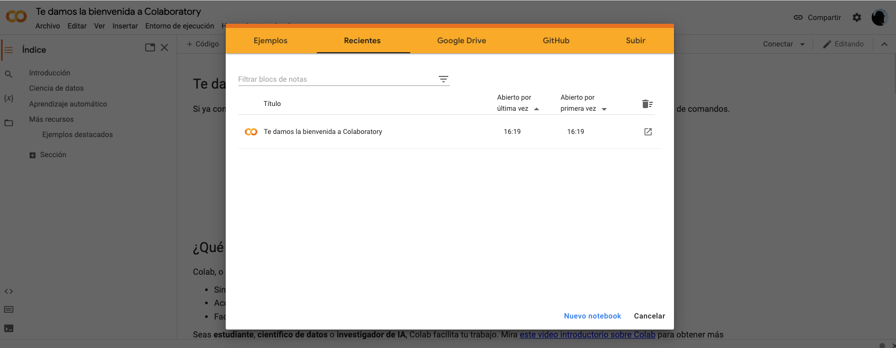
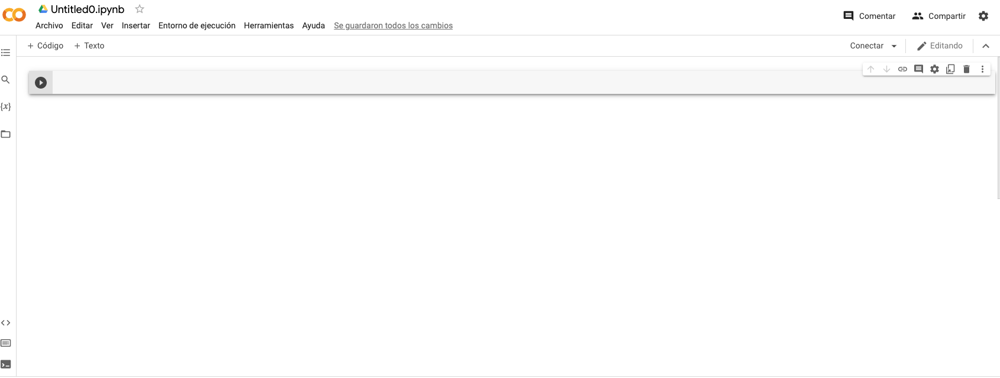

Crear un cuaderno para prácticar con código
Contents
Crear un cuaderno para prácticar con código#
Para hacer las cosas más simples poner rápidamente manos a la obra, vamos a crear un cuaderno en Google Colab para importar, procesar y visualizar nuestros datos.
Note
No necesitaremos instalar ningún programa. El único pre-requisito es tener una cuenta de Google.
Google Colab#
Google Colab es una herramienta gratuita de Google que permite escribir y ejecutar código directamente en tu navegador.1 Este programa nos será de mucha utilidad para trabajar con nuestros datos.
La creación de nuestro primer cuaderno en Google Colab es muy sencilla.
Primero, vamos al siguiente enlace: https://colab.research.google.com/. Si no has ingresado a la cuenta de Google podrás usar la aplicación, pero no podrás guardar los cambios. Por ello es importante que ingreses a la cuenta de Google desde el botón Acceder. Si ya habías ingresado a tu cuenta de Google es posible que simplemente te aparezca una pantalla como la siguiente:
{kind=link}
El siguiente paso consiste en crear un nuevo cuaderno de Google Colab. Para ello, solamente debemos hacer clic en el botón Nuevo cuaderno.
Se abrirá una ventana con el nuevo cuaderno:
{kind=link}
Para finalizar, solamente nos resta cambiar el título del cuaderno a nuestra elección.

Antes de empezar, familiaricémonos con el cuaderno de Google Colab#
Para poder seguir este curso cómodamente, tenemos que familiarizarnos con algunos elementos del Google Colab:
Celdas#
Las celdas son las partes de nuestro cuaderno que nos permiten escribir código o texto. El texto lo utilizamos para escribir comentarios, explicar los pasos que estamos ejecutando, etc. Es muy similar a lo que presentamos en esta página (que de hecho, está hecha en JupyterBook). Las celdad de código permiten escribir y ejecutar código. En nuestro caso, usaremos el lenguaje de programación Python 2.
Veámos rápidamente su funcionamiento a través del siguiente video:
Archivos#
Una parte importantísima de Google Colab se refiere a la gestión de archivos. En el siguiente video te mostramos su funcionamiento básico. Centrémonos por lo pronto en estos aspectos:
La manera en que podemos subir archivos a Google Colab.
Añadir una unidad de Drive para conservar nuestros archivos y no se pierdan cuando se reinicie el entorno de ejecución.
Compartir tu cuaderno de Google Colab#
Finalmente, vamos a compartir nuestro cuaderno de Google Colab. Estos cuadernos funcionan de la misma manera que un documento compartido de Google Drive, por lo que solamente debemos hacer clic en el botón Compartir. En el siguiente video te mostramos como compartir nuestro cuaderno.
Comparte tu cuaderno#
Como un ejercicio práctico, comparte en el foro Google Colab de la primera semana el cuaderno que has creado. Solamente copia el enlace público (solo lectura) en el foro para que los demás participantes lo puedan consultar.
Solamente unos requisitos básicos:
incluye al menos una celda de texto
incluye al menos una celda de código
incluye una ruta a un documento de texto en Google Drive
en una celda, escribe el código que muestre que es posible leer el archivo de texto
Obviamente tu creatividad es el límite, así que si quieres incluir alguna otra maravilla que hayas realizado (subir una imagen en una celda de texto, etc.), no dudes en hacerlo.
Notas#
- 1
El sistema que utiliza Google Colab se denomina Jupyter Notebook. Si deseas profundizar un poco más en su uso puedes consultar el siguiente video de Leonardo Kuffo.
- 2
Es un lenguaje de programación de alto nivel, que se utiliza para escribir código de programación. Ver entrada en Wikipedia